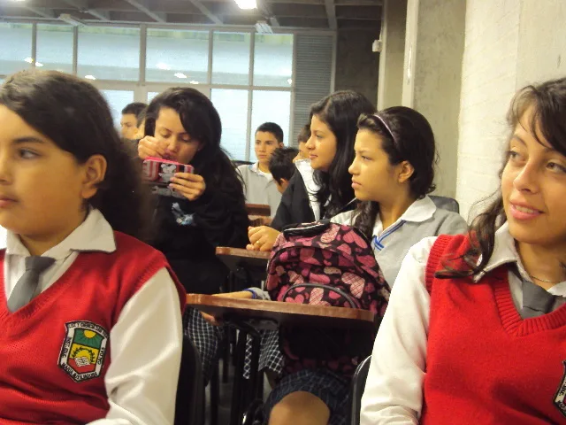
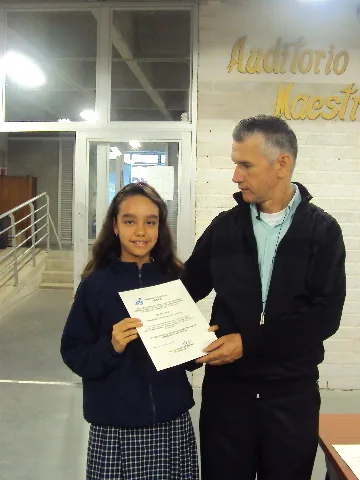
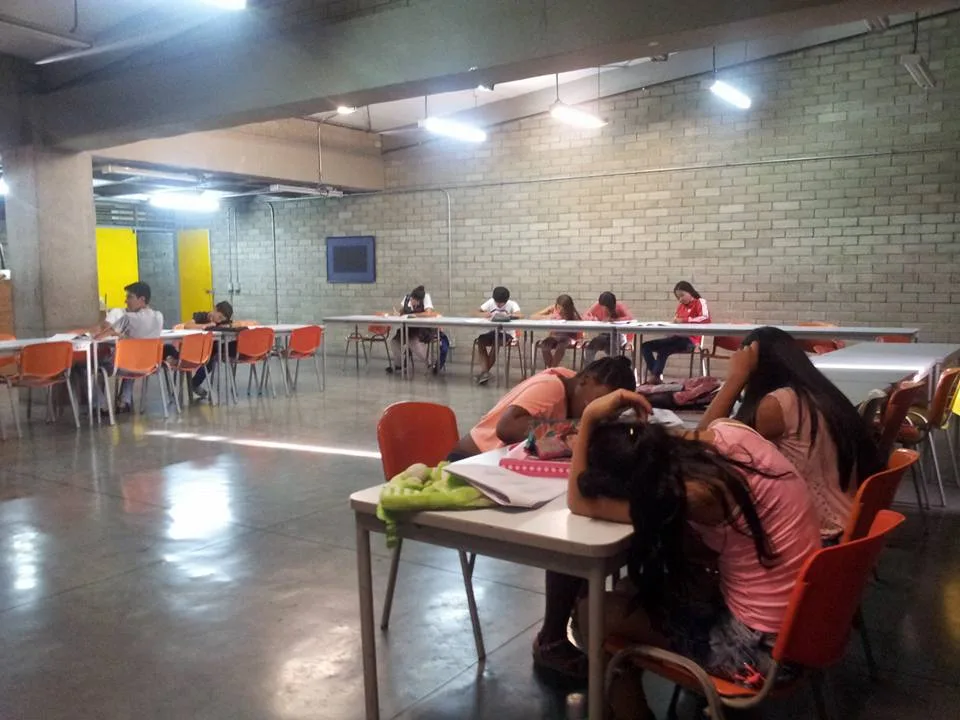
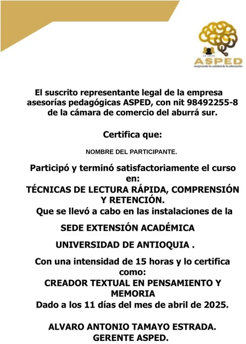

- Percepción visual
- Amplitud del foco visual
- Prelectura
- Identificación de regresiones
- Flexibilidad lectora
Entidad sin ánimo de lucro · Desde 1994
Formamos lectores expertos.
Programa de Técnicas de Lectura Rápida, Comprensión y Retención.
30 años acompañando la calidad educativa de los municipios de Antioquia.
Hablar por WhatsApp 320 758 4383

30
años de trayectoria
20
técnicas de lectura
3
módulos de formación
15h
de duración total
01 El reto
La comprensión lectora sigue siendo uno de los grandes retos educativos.
Es una de las principales dificultades detectadas en las pruebas de Estado. FUNDASPED trabaja directamente sobre ella: no para leer más palabras por minuto, sino para formar lectores críticos y autónomos.
«No es lo mismo leer por distracción que leer para un proceso educativo.»
Diagnosticamos competencia lectora en
- 3º
- 5º
- 9º
- 11º

02 Quiénes somos
FUNDASPED
Fundación Educativa Asesorías Pedagógicas. Entidad sin ánimo de lucro.
Nacimos en 1994 para acompañar a los padres de familia en el proceso educativo de sus hijos, a través de las escuelas de padres. Ese acompañamiento se extendió con el tiempo a instituciones educativas de distintos municipios del departamento.
Hoy seguimos trabajando junto a rectores y secretarías de educación en el mejoramiento de la calidad, esta vez a través de un programa que ataca una de las dificultades detectadas en Saber 11, Saber y Saber Pro: la comprensión lectora.
-
1994
Origen
Nace la Fundación Educativa Asesorías Pedagógicas.
-
Acompañamiento a familias
Escuelas de padres para apoyar el proceso educativo de los hijos.
-
Instituciones educativas
El trabajo se extiende a varios municipios del departamento.
-
Competencia lectora
Programa de Técnicas de Lectura Rápida, Comprensión y Retención.
-
Hoy
30 años después
Trabajo conjunto con rectores y secretarías de educación.
03 El programa
Técnicas que transforman la forma de leer.
Un conjunto de herramientas que desarrollan la capacidad visual y mental de lectura, para ganar tiempo y mejorar la expresión oral y escrita.
El estudiante aprende a elegir la técnica adecuada según el objetivo de cada lectura. Se ha aplicado en ciencias sociales, matemáticas e idiomas.
- Concentración
- Técnica de párrafo
- Desarrollo del pensamiento
- Síntesis
- Estrategia
- Aprendizaje colectivo
- Métodos de estudio
- Lectura de prensa y revistas
- Presentación de evaluaciones
Las 20 técnicas se distribuyen entre los tres módulos. Al finalizar, cada participante recibe su certificado como Lector Experto en Técnicas de Lectura Rápida.
04 Beneficios
Lo que cambia para sus estudiantes y docentes.
-
01
Mejor desempeño académico
Identifican y corrigen a tiempo sus dificultades de comprensión lectora.
-
02
Preparación para pruebas de Estado
Mejor desempeño en Saber 11, Saber y Saber Pro, y más opciones de beca universitaria.
-
03
Aprovechamiento del tiempo
Ganan tiempo de estudio y mejoran su expresión oral y escrita.
-
04
Aplicable a todas las áreas
Ciencias sociales, matemáticas e idiomas: la técnica se ajusta al objetivo de cada lectura.
-
05
Certificación de Lector Experto
Un respaldo con proyección laboral, útil en procesos de selección.
-
06
Capacitación gratuita a docentes
Sin costo para la institución, para los docentes que lo deseen.
05 Momentos del programa
Así vivimos las técnicas de lectura en las instituciones educativas.
Fotografías de estudiantes participantes, usadas con autorización de sus padres de familia conforme al programa de patrocinio educativo de FUNDASPED.
06 Certificación
Cada participante recibe una certificación.
Al finalizar las 15 horas, el estudiante recibe su certificado como Lector Experto en Técnicas de Lectura Rápida: un respaldo con proyección laboral, útil tanto en el camino académico como en procesos de selección.

07 Propuestas para instituciones
Una propuesta para cada necesidad.
01
Mil Lectores Expertos
Para estudiantes de grado 11°
Preparación para las becas universitarias del Estado.
02
Talleres de diagnóstico en competencia lectora
Para grados 3°, 5°, 9° y 11°
Identificamos las dificultades de comprensión lectora para diseñar estrategias de mejoramiento.
03
Promoción anticipada
Para estudiantes no promovidos
Alcanzar los resultados necesarios para ser promovidos en el primer periodo académico.
04
Textos «El arte de leer»
Para grado cero o preescolar y grado primero
Material de lectura para acompañar los grados iniciales.
¿Cuál se ajusta mejor a su institución? Conversemos en el comité operativo de rectores o en la junta municipal de educación: ajustamos cobertura y grados según las necesidades de cada establecimiento.
Una invitación
¿Quiere llevar el programa a su institución?
Solicitamos un espacio en su comité operativo de rectores o en la junta municipal de educación para presentar la propuesta.
08 Donaciones
Su aporte sostiene nuestro trabajo por la lectura.
FUNDASPED es una entidad sin ánimo de lucro. Cada donación ayuda a llegar a instituciones que no siempre cuentan con los recursos para acceder al programa completo.
- 01 Talleres de diagnóstico en competencia lectora
- 02 Capacitación gratuita a docentes
- 03 Materiales de lectura para los grados iniciales
- 04 Becas para estudiantes del programa
Carta de agradecimiento
Gracias a quienes han creído en este proyecto.
A las instituciones educativas, secretarías de educación, docentes, padres de familia y aliados que durante estos 30 años han creído en este programa: gracias por abrirnos las puertas de sus aulas y comités, y por permitirnos acompañar a sus estudiantes en el camino hacia una lectura más crítica y consciente.
Cada certificado entregado, cada taller realizado y cada docente capacitado es también su logro. Seguimos comprometidos con la calidad educativa de nuestros municipios, y esperamos seguir contando con su confianza y su apoyo.
Álvaro Antonio Tamayo EstradaGerente · FUNDASPED
09 Contacto
Conversemos sobre su institución.
- Gerente
- Álvaro Antonio Tamayo Estrada
- WhatsApp / Celular
- 320 758 4383
- Asesorías Pedagógicas Asped
- Ubicación
- Medellín · Antioquia · Colombia